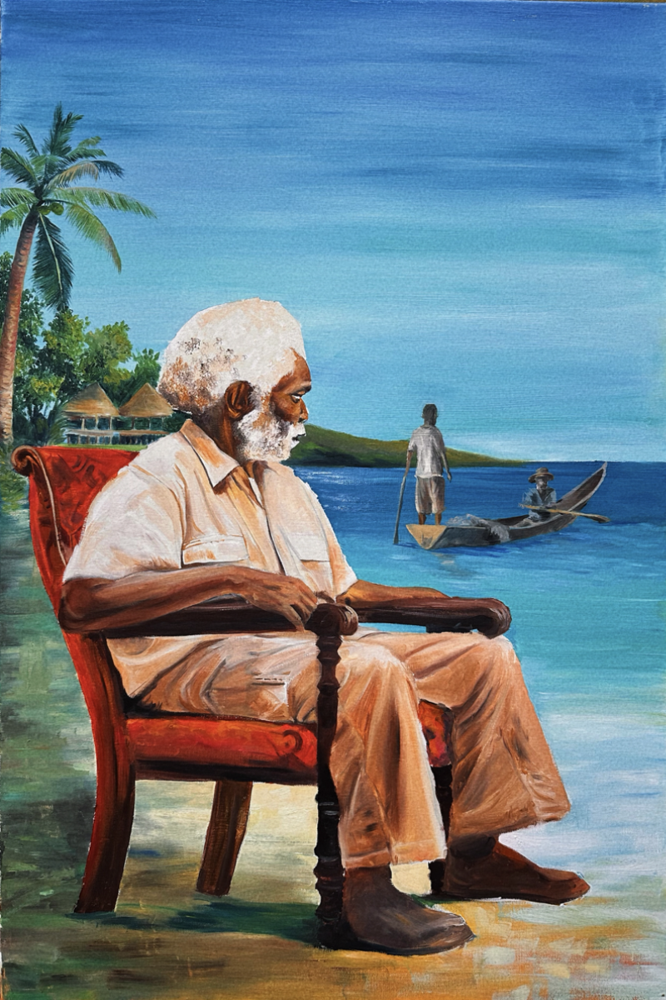
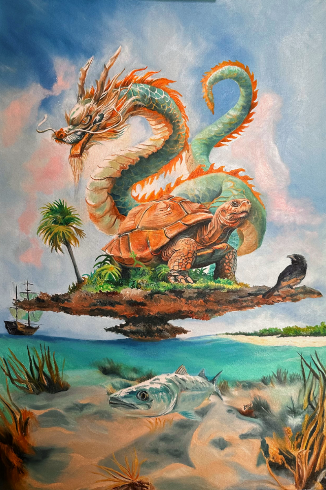

Ocean’s Storyteller 1
Size: 60 x 50
Medium: Oil on Canvas
2024
Set against the tranquil backdrop of a beach, this painting depicts a heartfelt conversation between a young boy and his grandfather. The grandfather recounts the traditional fishing methods of the past—using a “pirogue boat” and handmade fishing nets. Through his storytelling, he vividly recreates the ritual of setting out to sea in the early morning and the daily routine of selling the catch from house to house. This painting is a nostalgic tribute to the simplicity and connection of life by the sea, while also capturing the deep emotional bond between generations and the transmission of cultural memories.
Ocean’s Storyteller 2

Size: 60 x 50
Medium: Oil on Canvas
2024
This is a two-piece work. Set against the tranquil backdrop of a beach, this painting depicts a heartfelt conversation between a young boy and his grandfather. The grandfather recounts the traditional fishing methods of the past—using a ‘pirogue boat’ and handmade fishing nets. Through his storytelling, he vividly recreates the ritual of setting out to sea in the early morning and the daily routine of selling the catch from house to house. This painting is a nostalgic tribute to the simplicity and connection of life by the sea, while also capturing the deep emotional bond between generations and the transmission of cultural memories.
Embracing Changes, Shaping Dreams 3

Size: 120 x 60
Medium: Oil on Canvas
2024
This is the third piece in a series of works that holds deep personal meaning for me. It includes a series of three paintings centered around my adopted father. In these precious moments at home, I remember him telling me his stories while relaxing outdoors with us after a day of household chores. During these times, he would share heartfelt stories, warming our nights and making these moments truly unforgettable.
The series further explores his life, depicting scenes of him creating prosthetics in his workshop. These works reflect the stories he shared with me about losing his legs, his time in the military, the dreams he once had for the future, and his resilient attitude toward life after the loss. Together, these pieces pay tribute to his strength, dreams, past, and his journey toward acceptance
The Aldabra Dragon:
Where Myth Meets Reality
Size: 60 x 40
Medium: Oil on Canvas
2024
This painting imagines a mythical transformation of the Aldabra Islands through the arrival of a Chinese dragon, crafted for a competition that invited artists to envision such a dragon in their own country. My creation encircles the Aldabra atoll with the majestic dragon, intertwining it with key symbols of the islands’ heritage. Prominently featured are the iconic giant tortoises, symbolizing longevity and resilience. Adding a touch of historical allure, a pirate ship sails on the horizon, conjuring images of seafaring legends and past exploits. Below the translucent waters, the outline of the atoll is visible, blending the island’s underwater mystique with its surface narrative. This artwork merges myth with the rich natural and historical tapestry of Aldabra, creating a captivating visual story.
Ladies

Size: 190 x 160
Medium: Oil on Canvas
2023
This composition captures three women in a graceful pose, each highlighted by a distinct and vibrant color scheme of blue, green, and orange-red, which harmoniously blends to enhance the visual appeal of the piece. In the background, an assortment of picture frames adds layers of depth and intrigue, enriching the overall setting. This thoughtful use of color and decor creates a striking, cohesive tableau that invites viewers to explore the subtle interplay of unity and individuality.